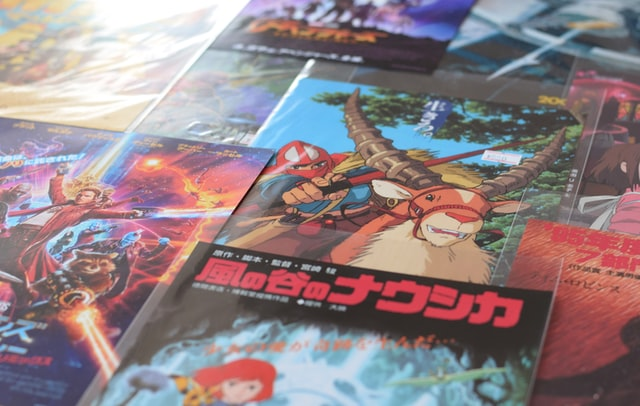

A Deeper Look into Animation
Animation is defined in the Oxford Dictionary as ” the technique of photographing successive drawings or positions of puppets or models to create an illusion of movement when the movie is shown as a sequence.” Which means that animation is a form of media, however, a lot of people see animation as a genre. One thing that I have noticed, especially with the older generation, is the belief that all animated films and series belong to the children/family genre, when that is not always the case. There are so many wonderful and amazing stories told through animation, yet they are ignored because animation is seen as “childish.” That is the main reason why I am creating this blog, I want to change that viewpoint on animation. I want to show how in depth the stories and characters can be in animation by providing an analysis of some of my favorite animated series and movies.